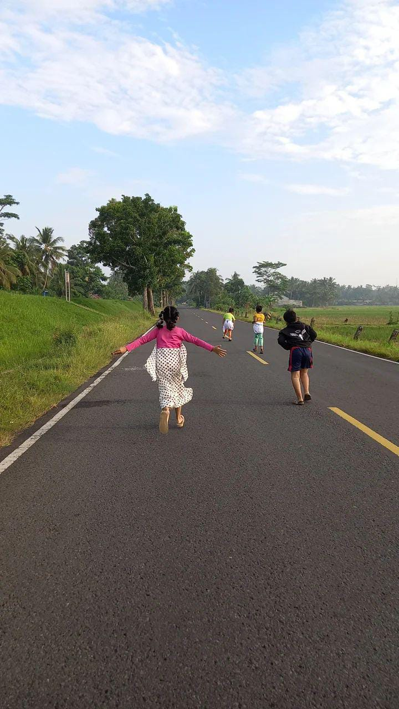

Selamat Datang di Desa Patimuan
Desa Patimuan, yang terletak di Kecamatan Patimuan, Kabupaten Cilacap, merupakan desa yang asri dengan masyarakat yang ramah dan budaya gotong royong yang kuat.
Desa ini terdiri dari 14 RW, 60 RT, dan 5 dusun, yaitu:
- Dusun Patimuan
- Dusun Wadasjontor
- Dusun Nusawuluh
- Dusun Kalenpring
- Dusun Stap Sanga
Selain menjadi pusat kegiatan pertanian, desa ini juga memiliki potensi ekowisata dan budaya yang khas. Dengan keindahan alam yang memukau serta kehidupan sosial yang harmonis, Desa Patimuan terus berupaya menjadi desa yang mandiri, berdaya saing, dan lestari.
